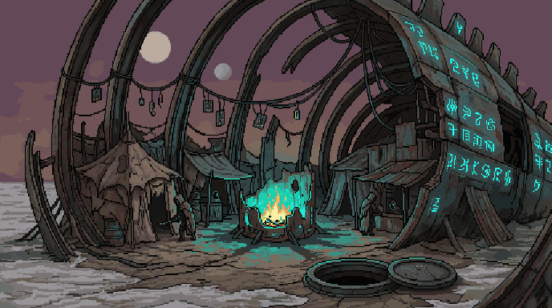
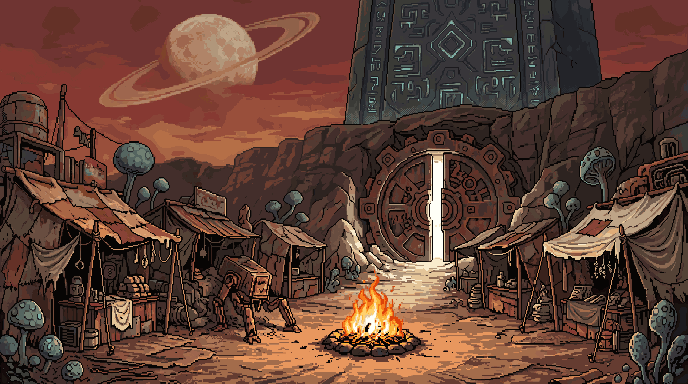
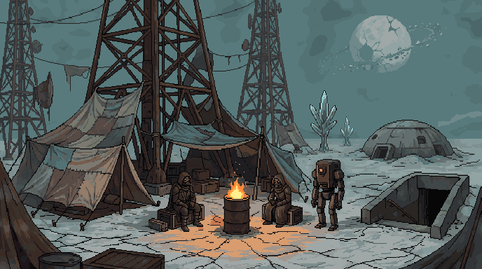
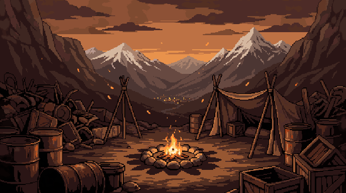
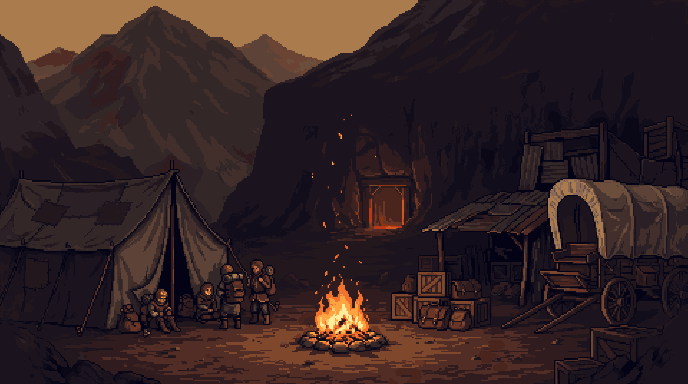
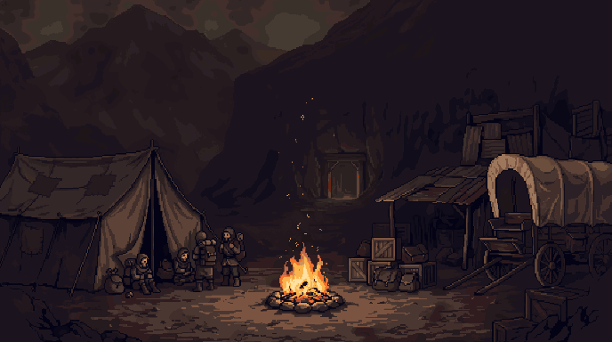
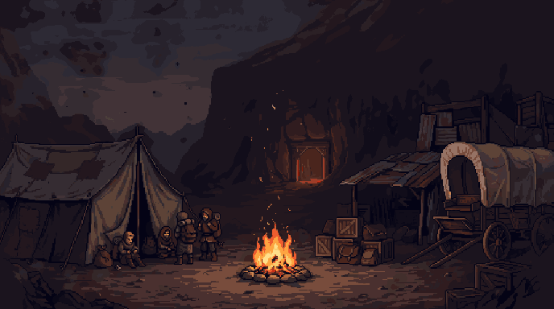
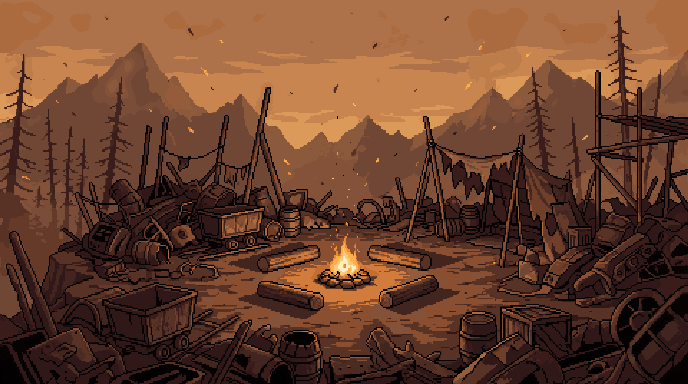

A settlement inside the ribcage of a colossal fallen machine on salt flats. Glowing glyphs on the hull, a teal reactor-housing fire, twin moons, and a sealed hatch leading down. Styled on the Phaseknife.

A patchwork market at the foot of a glyph-covered monolith, with a dead walker robot, bulbous fungus-trees, a ringed moon and a giant blast door cracked open with light spilling out. Styled on the Junk Prophet.

Parachute-silk tents strung between the pylons of an ancient antenna array, an oil-drum fire, a one-eyed sentinel robot, glass trees, a buried dome, a bunker stairwell and a shattered moon. Styled on the Shopkeep.

Closest to the current image: stone fire ring, tripods, valley with distant town lights, barrels and crates.

Tent, covered wagon, delvers gathered at the fire, and a glowing mine entrance in the cliff — ties the hub to the descent.

Camp B re-generated with the shopkeep portrait as style reference.

Camp B re-generated with the suturist portrait as style reference.

Log seats around a small fire, heaps of scrap, mine carts, dead pines — the bleakest of the three.
